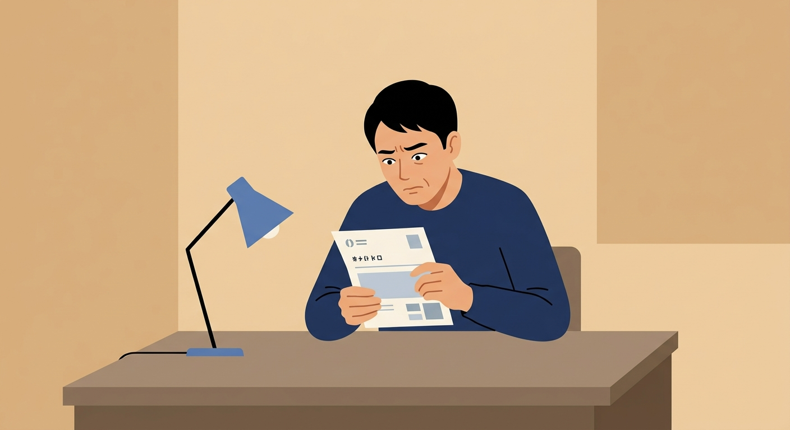

상담 안내
보험사기 혐의로
보험사기 혐의로
조사 통지를 받으셨나요?
진술 전에, 제가 먼저 살펴봐드릴게요.
허위입원 보험사기로 신고당했다면, 실제로 아팠다는 말만으로는 충분하지 않습니다.

입원 중 외출, 주말에만 반복된 입원, 치료 중 출근 이력 — 불리해 보일 수 있지만, 그것만으로 곧바로 보험사기가 되는 것은 아닙니다.
진술 전에, 제가 먼저 살펴봐드릴게요.